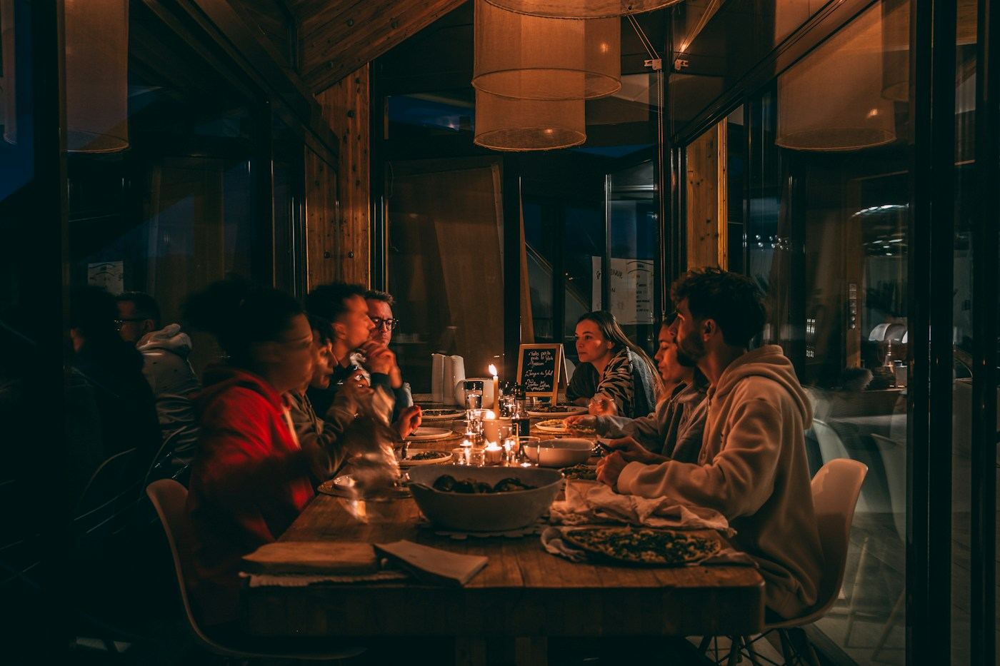
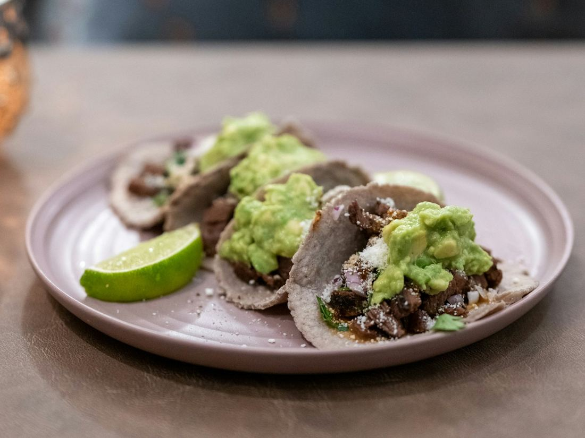
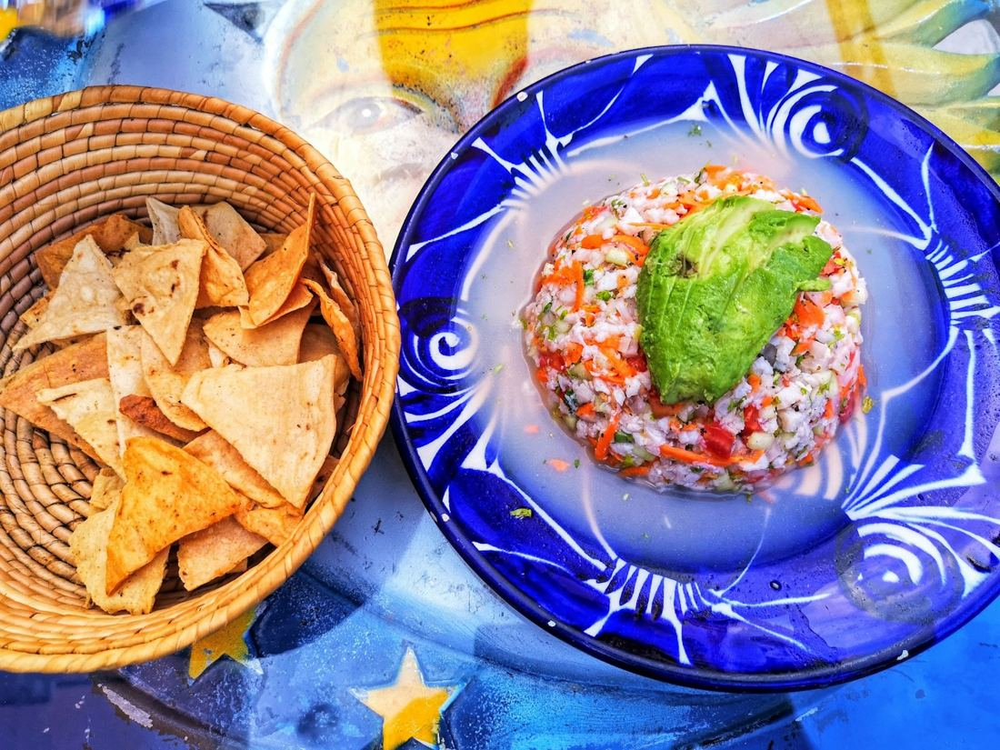
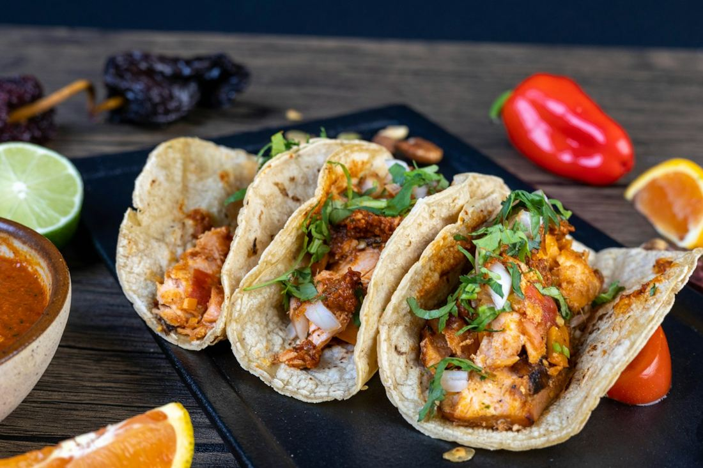
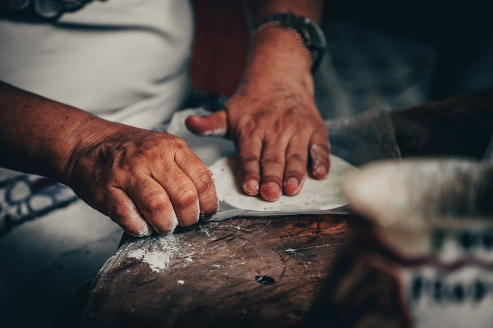
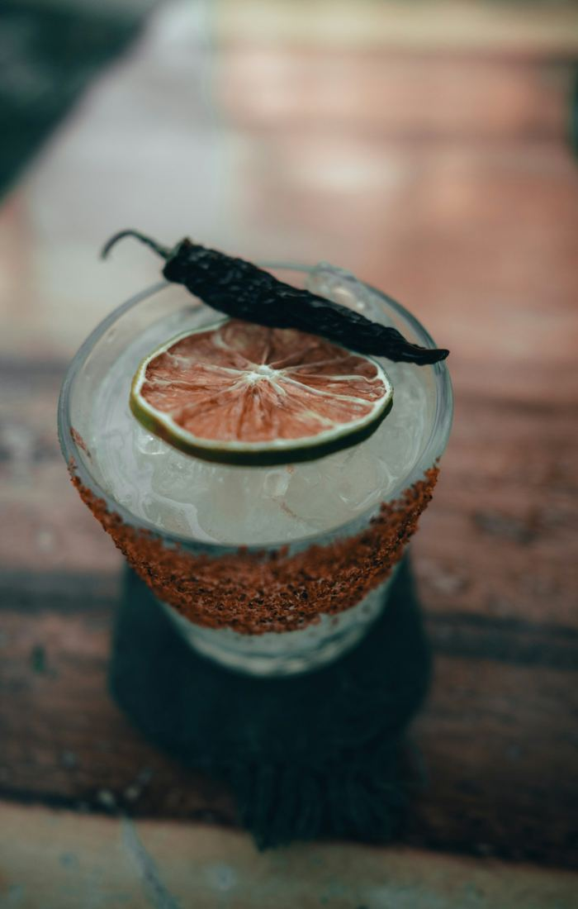
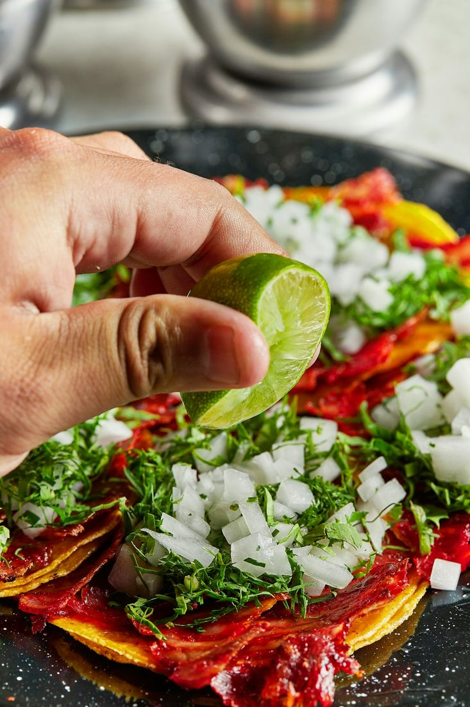
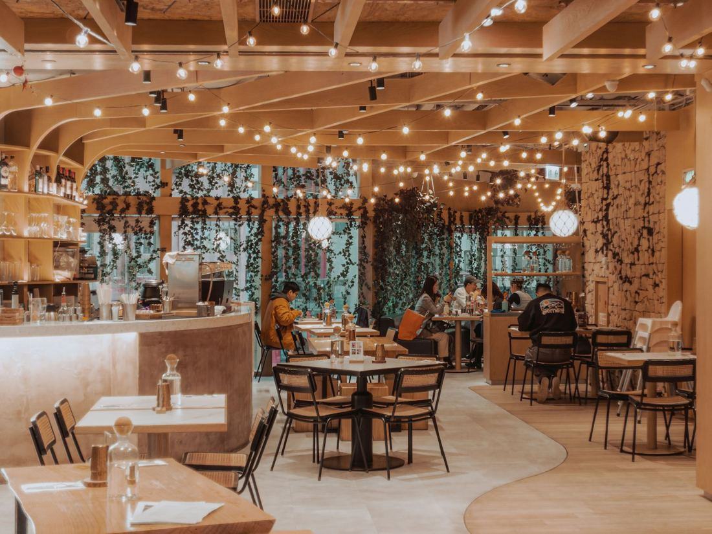
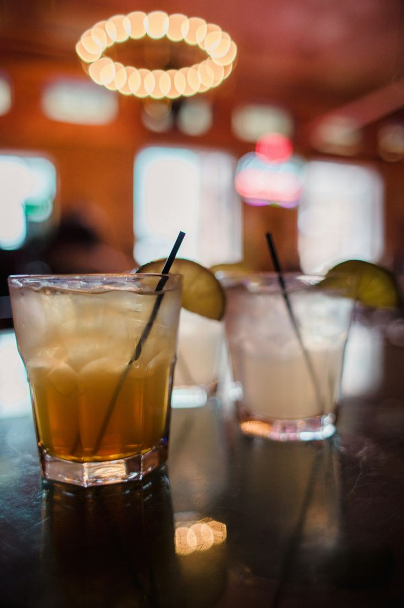
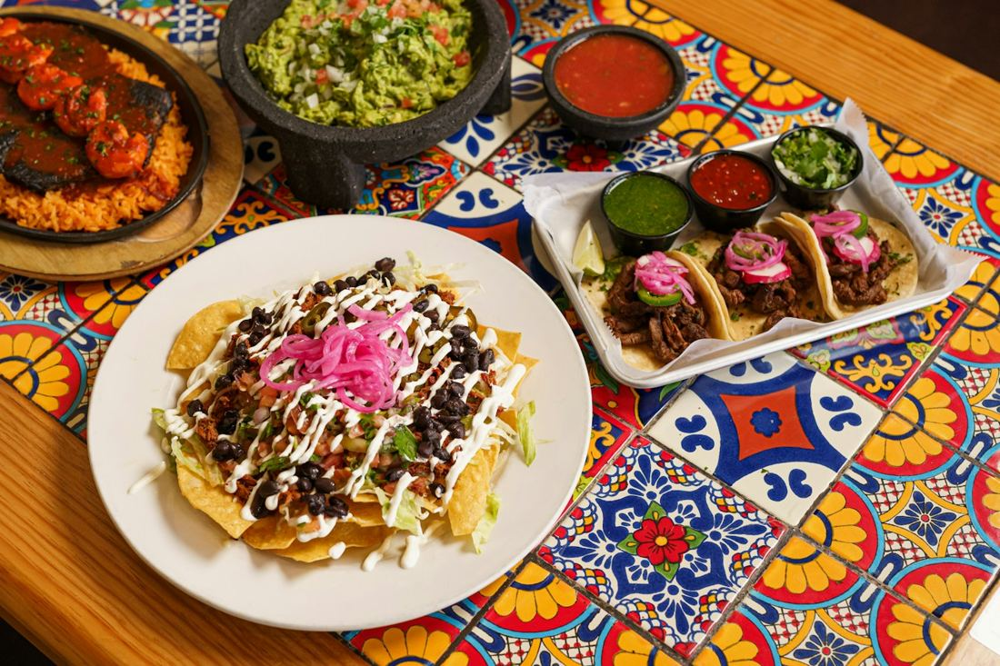

Tortillas hechas al momento.
Cocina mexicana de comal en la Roma desde 2014. Maíz nixtamalizado aquí mismo, salsas de molcajete y mezcal de pequeños productores.
- Dirección
- Colima 41, Roma Norte
- Horario
- Mar a dom desde 13:00
- Precio
- $350 – $500 por persona
- Reservas
- Por WhatsApp
Lo más pedido
Si es tu primera vez
-

Tacos de arrachera
$185Tres tacos en tortilla de maíz azul con guacamole martajado.
-

Tostada de atún
$165Atún fresco, chile serrano, pepino y mayonesa de chipotle.
-

Camarón al pastor
$210Adobado en casa con piña asada y salsa de chile de árbol.

Nuestra cocina
Todo empieza en el comal.
Cada mañana nixtamalizamos el maíz que nos manda una cooperativa de Tlaxcala. Las tortillas se hacen a mano cuando pides, nunca antes.
Lo aprendimos de la abuela de Lupita, nuestra cocinera, que tuvo una fonda en Puebla por cuarenta años.
— Lupita y Andrés
En Instagram
@comal.roma





Reseñas
Lo que dicen en Google
“Las tortillas recién hechas cambian todo. La tostada de atún, obligatoria.”
“Fuimos a un cumpleaños de 12 personas y nos atendieron increíble.”
“El mejor mezcal de la colonia, y te explican de dónde viene cada uno.”
Te guardamos una mesa.
Recibimos sin reservación, pero los viernes y sábados se llena. Reserva en un minuto por WhatsApp.